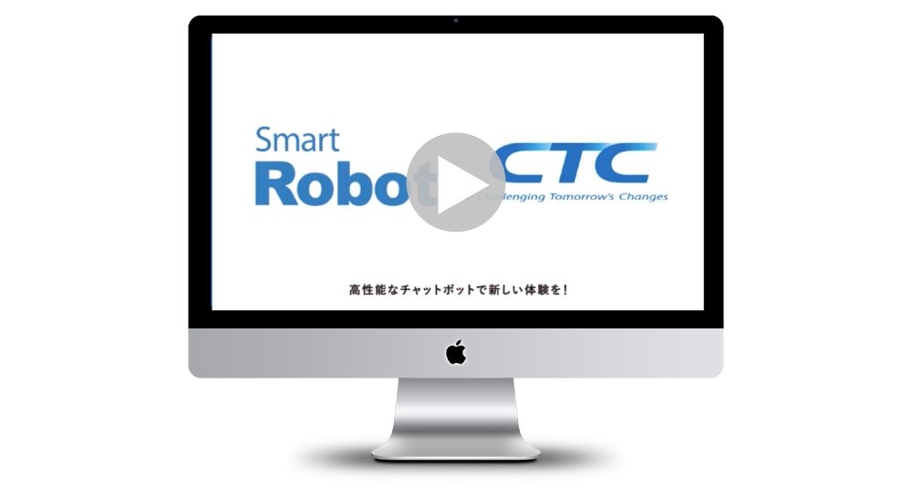

WORKS
制作物

※動画は表示できません
サービス紹介動画制作
Video editor / Direction
- 概要
- イベントでのサービス紹介や営業支援ツールとして活用するモーショングラフィックス動画の企画・制作を担当。
サービス内容の理解や競合調査を実施したうえで、クライアントとの要件整理を行い、構成設計や絵コンテを作成。要望に応じたイラスト素材の制作・選定に加え、視覚的に伝わりやすいアニメーションを設計・制作した。
また、ナレーション原稿の作成からアニメーションとのタイミング調整まで一貫して対応し、分かりやすく訴求力のある動画に仕上げた。
- 使用ツール
- Photoshop ・ Illustrator
- 制作期間
- 60時間
- 対応範囲
- ディレクション ・ 要件ヒアリング ・ 企画・構成 ・ 絵コンテ作成 ・ シナリオ・ナレーション原稿作成 ・ イラスト制作・素材選定 ・ モーショングラフィックス制作 ・ 動画編集 ・ 品質管理